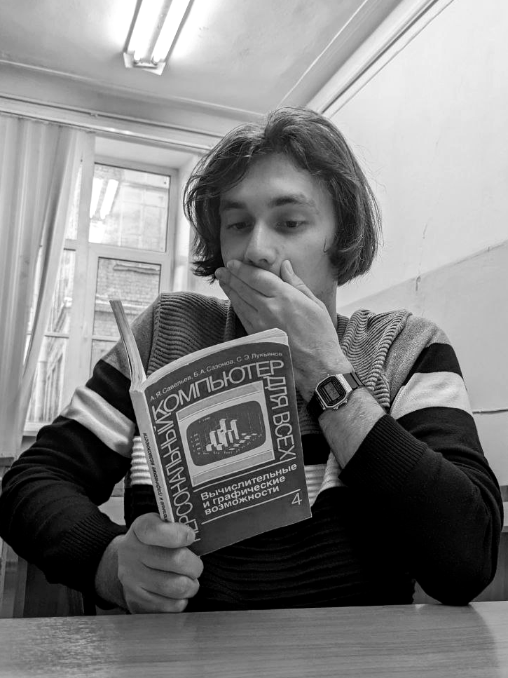

 @OriginalniyID
@OriginalniyID
 mlgnikitka@gmail.com
mlgnikitka@gmail.com
 github.com/BanVacc
github.com/BanVacc
 +7 996-412-57-33
+7 996-412-57-33
Образование
- Бакалавр, СПбГТИ(ТУ) Факультет Информационных технологий и управления
- Направленность:"Системный анализ и управление в химической технологии"
- Научная работа в области моделирования гидродинамики и теплопереноса в канале микрореактора для получения биотоплива
Личные качества
- Целеустремленный и нацелен на достижение результата;
- Усидчивый и быстро обучаюсь;
- Умею эффективно работать с большим объемом информации и расставлять приоритеты;
- По мере возможности помогаю в работе коллегам
Контактная информция
Никита Воробьев
Python разработчик и системный аналитикОсновные умения
Благодаря опыту работы в научной сфере развил аналитические навыки для эффективного решения задач. Имею опыт публикации научных статей, презентаций на конференциях, что позволяет мне успешно коммуницировать и представлять свою работу; Английский язык: чтение документации и некоторой технической литературы.| PYTHON |
|
|---|---|
| ВЫЧИСЛИТЕЛЬНАЯ МАТЕМАТИКА |
|
| ПРОЧИЕ НАВЫКИ |
|